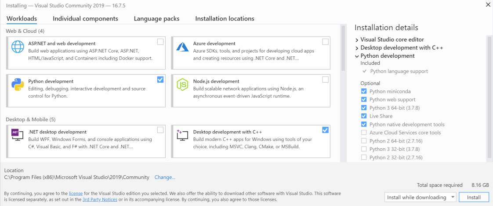
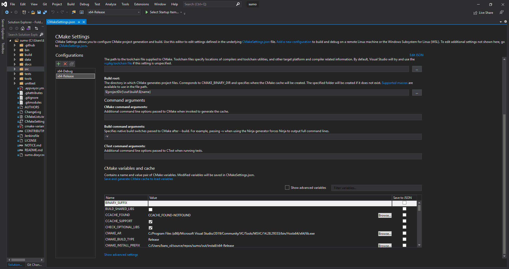
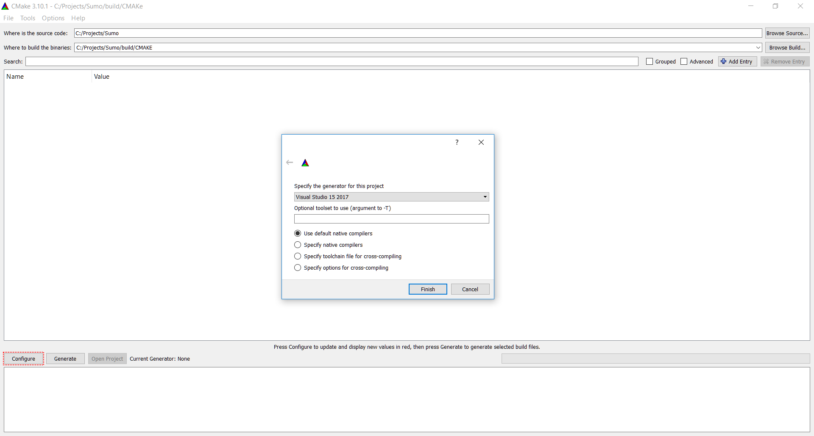
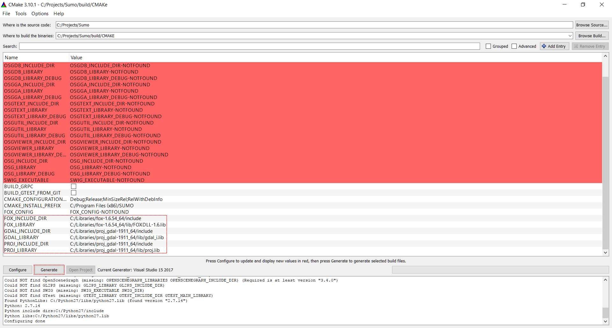
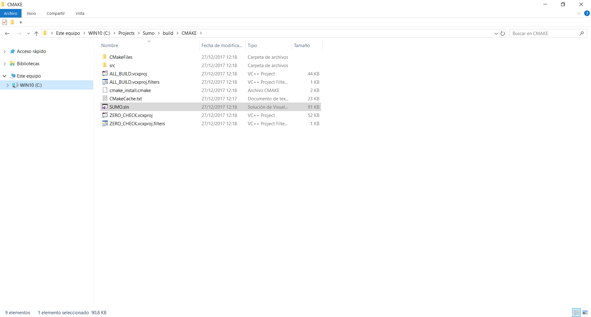
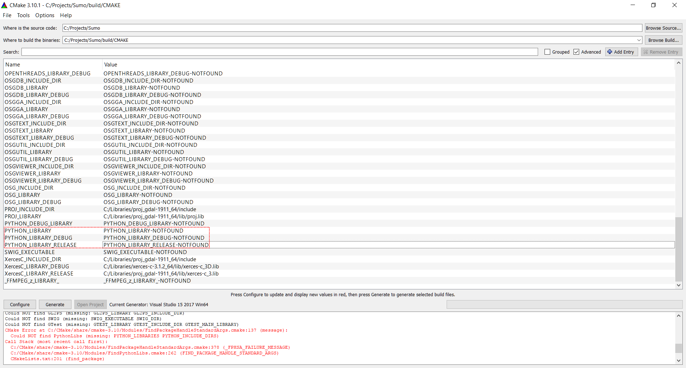
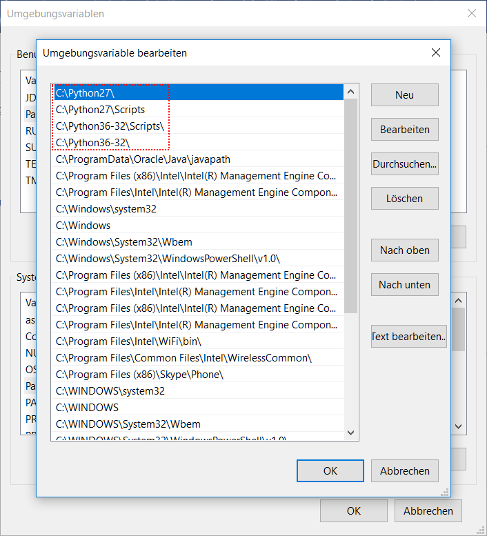
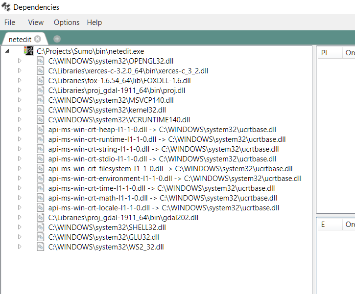

This document describes how to build SUMO under Windows using only freely available (this does not mean "open source") tools. Instructions on how to build SUMO on Windows using an Open Source toolchain are included in our building on Linux page. Please note that you may also download pre-build Windows binaries.
Prerequisites#
- A Visual Studio Community, Professional or Enterprise 2015 or later installation
- CMake for Windows
- Python 3.X
- SUMO sources (either an unpacked src zip or a git clone, see Getting the source code)
- Installed Libraries (Xerces-C, Proj, Fox) preferably by cloning https://github.com/DLR-TS/SUMOLibraries/
- Make sure that the
SUMO_LIBRARIESenvironment variable points to your cloned directory
- Make sure that the
Recommended Windows setup#
- Download Visual Studio Community Edition
- Start the installer and select:
- Python development (including native tools)
- Desktop development with C++
- Start the installer and select:

- Clone https://github.com/eclipse/sumo or open your existing local SUMO folder
- Go to team explorer
- Choose Manage Connections, then "Local Git"->Clone https://github.com/DLR-TS/SUMOLibraries
- Now be patient until CMake starts configuring
- If it does not or you want to reconfigure choose Project->Generate Cache (if this option is not there you may need to wait a little longer until Visual Studio has picked up everything)
- Select Build->Build All (CMake->Build All in earlier versions)
- Set the SUMO_HOME environment variable
- Install Texttest https://sourceforge.net/projects/texttest/files/latest/download
CMake settings can easily be modified, loaded and saved using Project -> CMake Settings in Visual Studio.

Editing the CMake settings using Visual Studio
Optional but still recommended steps#
- Install Notepad++
- Install TortoiseGit
- Install Git command line tools (this is mandatory if you install TortoiseGit)
- If you decide to use the Python which comes with Visual Studio
- Test start a python script and add association
- Add Python to the path (also the Scripts dir), find it at
C:\Program Files (x86)\Microsoft Visual Studio\Shared\Python37_64 - Install pyautogui, matplotlib, rtree, pyproj, lxml, pipwin following the instructions https://docs.microsoft.com/en-us/visualstudio/python/tutorial-working-with-python-in-visual-studio-step-05-installing-packages?view=vs-2019
- If not, use
pip install pyautogui matplotlib pyproj lxml pipwin
- Run
pipwin install rtree(or download Rtree from here and install it manually) - (after 30 days) Setup a Microsoft account (if you do not already have one) and register your Visual Studio
Further notes#
If you need a different python version or want to test with multiple Pythons you can either install them directly from Visual Studio or Download Python for Windows and install it. Most SUMO tools should work with Python 2 and 3. Please make sure that you install the recommend python modules as above.
If you want to clone / checkout a special SUMO version, you can of course do it from the command line (if you have installed the command line tools)
using git clone --recursive https://github.com/eclipse/sumo or download and extract a source package, see Downloads.
The command for the Libraries is: git clone --recursive https://github.com/DLR-TS/SUMOLibraries. If you do not place the libraries in the same folder as SUMO, you will need to set the SUMO_LIBRARIES environment variable to the directory.
If Visual Studio fails at first try, it is probably because the SUMOLibraries are not cloned yet or are in an unusual location. The errors are due to Xerces not being found. Try:
- Select Project->"Generate Cache" to try again (it is CMake->Generate in earlier Visual Studio versions) or see below.
Adapting settings#
If you need to modify settings, you can edit the CMakeCache.txt by opening it in your favorite text editor or via the Project->CMake-Cache menu. The following things might be useful:
- If the libraries are not found, set
SUMO_LIBRARIES:PATHto something likeC:/Users/testus/source/repos/SUMOLibraries) and retry - If a wrong Python interpreter or library is found, edit the PYTHON_* variables
- If you want to disable building the GUI (Fox) or usage of Proj, set the according library entries to an empty string
To make a debug build, you should not change CMAKE_BUILD_TYPE in the cache file. You should choose a different configuration in the GUI instead.
Libraries#
We provide a central location for getting all dependent libraries at
https://github.com/DLR-TS/SUMOLibraries. The easiest way is to clone
this repository and define an environment variable SUMO_LIBRARIES
pointing to the resulting directory. They are build using Visual Studio
2019, but may be used with earlier and later versions as well. You may
need to install the Visual C++ 2019 Runtime Distributable for running
SUMO (tested with Visual Studio 2019).
For details on building your
own and also on how to use different versions and additional libraries
see Installing/Windows_Libraries.
Make sure that the subdirectories fox-1.6.54/lib, proj_gdal-1911/bin
and xerces-c-3.2.0/bin are in PATH. Note: for 32 bits compilations
folders are 32bits/fox-1.6.54/lib, 32bits/proj_gdal-1911/bin and
32bits/xerces-c-3.2.0/bin. You can add both to the path but always add the
64 bit version first.
Manual CMake configuration#
Method 1: Via CMake GUI#
- Start the CMake gui
- Select the source path (e.g. D:\projects\sumo)
- Select the build path (e.g. D:\projects\sumo\cmake-build)
- It can be identical to the source path, but we recommend to separate them
- Build directory will be created if necessary
- Start configuration by pressing the "Configure" button
- Select compiler (the default should do)
- Create the Visual Studio solution by clicking on "Generate"
- Open the generated solution (.sln file) (e.g. D:\projects\sumo\cmake-build\SUMO.sln) using the File Explorer or by clicking on "Open Project"
- Build the configurations you want
- Binaries will appear in D:\projects\sumo\bin
Visual guide:

Selecting Solution (Visual Studio, Eclipse, etc.) in the CMake gui

Libraries successfully configured

Generated solution
Method 2: Via CMake command line#
- Go to the source path (e.g.
cd D:\projects\sumo) - Create a build directory (e.g.
mkdir cmake-build && cd cmake-build) - Run CMake with the correct Visual Studio version (e.g.
cmake .. -G "Visual Studio 16 2019 Win64")- For a list of all possible generators run
cmake --help
- For a list of all possible generators run
- Open the solution D:\projects\sumo\cmake-build\SUMO.sln
- Or build from the command line using
cmake --build . --config Release
- Or build from the command line using
Tests#
If you plan to extend SUMO yourself, or just want to know whether everything compiled OK, it is strongly recommended to have a look at Developer/Tests. This tool makes it easier to check whether some existing functionality was broken by the extensions.
CLang#
If you want to compile using CLang in Windows, just add "ClangCL" in CMake's "Optional Toolset" (-T).
Troubleshooting#
- Note on installation paths: MSVC seems to have difficulties with
include and library paths containing spaces (for instance
C:\Program Files). Thus try to avoid installing SUMO or any of the libraries in such paths. - Python cannot be found
- Make sure that there are not two different Python versions installed
- Python libraries can be specified manually (e.g. <PythonFolder>\libs\python<version>.lib)

Python library fields in the CMake Cache

Two different Python versions at the same time
Linker reports something similar to "LINK : fatal error LNK1104: cannot open file 'C:\Program.obj'"#
You probably have installed a library to a path containing white spaces in its name. In such a case, the according environment variable should be embedded in quotes (").
Example: set FOX="D:\my libs\fox-1.6.36"
Failure on pre-build event (missing version.h or *typemap.h)#
If Visual Studio reports a failed pre-build event you can safely ignore
this, unless you are building from the source code
repository. In
this case you should probably install Python. Even if Python is
installed the file associations may be broken which causes the
generation of src/version.h via the tools/build/version.py script to fail. Either
repair your file associations or undefine HAVE_VERSION_H in
src/windows_config.h.
If you did install Python correctly, double check that it passes command line arguments. For a quick fix, you can also execute the following commands manually:
tools\build\version.py tools\build\typemap.py
Execution cannot proceed because MSVCR120.dll/MSVCR140.dll was not found#
Install Microsoft Visual C++ Redistributable Packages for Visual Studio 2012 (for MSVCR120.dll) or Microsoft Visual C++ Redistributable Packages for Visual Studio 2015 (for MSVCR140.dll). You can check if all dependencies are correct using Dependencies.

In debug mode, execution cannot proceed because MSVCR120D.dll/MSVCR140D.dll was not found#
Your version of Visual Studio doesn't support Debugging, you can only compile in release mode.